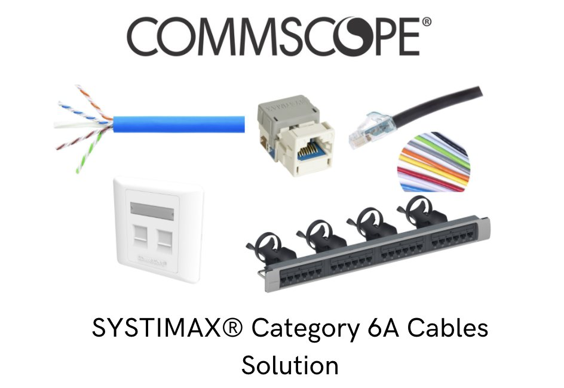

SYSTIMAX® Category 6A Cables Solution
2021-04-20 · Excel Unit Technology


Cat 6A cable: two decades old and still growing
SYSTIMAX® GigaSPEED® X10D is our compact Category 6A copper solution that delivers network line speeds up to at least 10 Gbps without requiring increased rack space and airflow. Using an innovative optimized material technology (OMT) platform, this high-performance twisted-pair cabling features a reduced core while still minimizing alien crosstalk.
GigaSPEED X10D offers the extra bandwidth networks need for future applications, including next-generation WLAN networks and in-building wireless requirements. It's easy to deploy, backwards compatible with 1G switches and is backed by CommScope's 25-year extended product warranty and applications assurance.
- Compatible with imVision® AIM intelligent platform
- Available as InstaPATCH® Cu preterminated assemblies
- Offered in plenum, non-plenum and low smoke zero halogen (LSZH) versions
What applications are ideally suited to Cat 6A?
Horizontal standard office applications: Most phones and laptops do not yet require 10 Gbps bandwidth, but using Cat 6A as the default cabling infrastructure provides a future-proof foundation — the headroom will be there when needed.
IoT: As IoT devices proliferate, Cat 6A provides both the bandwidth and, potentially, the power requirements.
PoE / lighting: IoT devices such as sensors or cameras have a ready source of power across Cat 6A, and it is increasingly used to power low-voltage LED lighting systems. Cat 6 enables PoE too, but may be prone to heat problems.
Wi-Fi 6/6E: Cat 6A is necessary to deliver the multi-gigabit backhaul required by next-generation Wi-Fi.
In-building cellular: Multi-gigabit backhaul is also required for DAS installations, as reliance on cellular networks alongside Wi-Fi grows.
SAN / NAS storage: 10 Gigabit Ethernet enables cost-effective, high-speed infrastructure for network-attached and storage area networks, with latencies comparable to traditional fiber-based technologies at lower cost under 100 metres.
High-performance computing, collaboration, streaming media & AV: Bandwidth-intensive applications — from medical imaging and visualization to multi-site collaboration and digital signage — all ride comfortably on a 10G copper foundation.
Browse the current range in our Copper Cable catalogue, or see the full product catalogue. Reference: CommScope — Cat6A: the fact file
Planning a project? 索取報價
Distributor pricing and Hong Kong stock within 2 business hours.